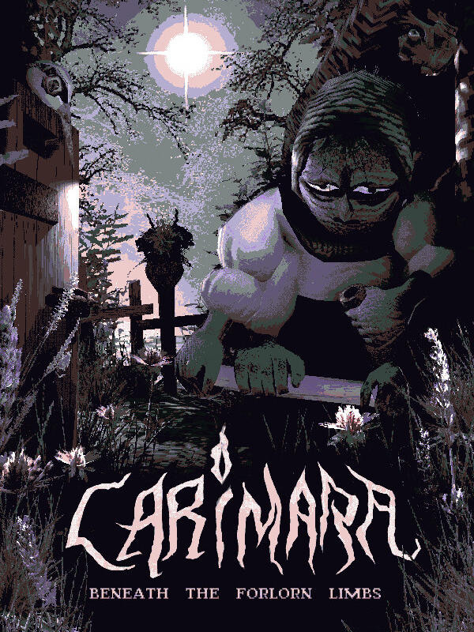

CARIMARA: Beneath the forlorn limbs
CARIMARA: Beneath the forlorn limbs
Details
|  | |
| Playtime | Not Played |
| Last Activity | Never |
| Added | 2025-12-19 11:05:13 |
| Modified | 2025-12-19 11:05:29 |
| Completion Status | Not Played |
| Library | Steam |
| Source | Steam |
| Platform | PC (Windows) |
| Release Date | 2025-10-06 |
| Community Score | |
| Critic Score | |
| User Score | |
| Genre | Adventure Card & Board Game Indie |
| Developer | Bastinus Rex |
| Publisher | Critical Reflex |
| Feature | Single Player |
| Links | Steam Bluesky Twitch YouTube |
| Tag | 3D Adventure Atmospheric Card Game Choices Matter Cinematic Dark Detective Experimental Exploration First-Person Horror Indie Interactive Fiction Mystery Puzzle Singleplayer Story Rich Surreal Walking Simulator |
Description

I had a blast creating this little game. It's a short experience, and I hope the secrets and little surprises I hid in it will stay with you for a long time!
- Bastinus Rex

You are the Carimara. Small, mute, sorcerous. Born of moss and mirrorlight, skilled only in the art of asking. Wandering a house stitched from grief and riddles; you don't speak, you don’t chant, you don’t fight. You hold the house by its dead hands and conjure questions from dust, from bone, from whatever’s left behind. Be careful not to press too far, or wake you might, what's sealed afar.
You Are Mute, But You Have A Gift Of Conjuring Questions
You speak through cards with glyphs long lost, in halls where kindness hides its cost.
Some smile, some sneer, some simply stare, but all who watch know you are there.

Every Object Is A Memory
Within these walls, let silence guide, where cards bloom from what things once hide.
Ask gently now, with ghostly touch. Some secrets crack when pressed too much.

A Stillness Dressed In Dust And Flame
Candlelight flickers on furniture worn, in rooms where silence was weathered and torn.
It waits in the gloom with a breath held tight, a hush that has lingered far past the night.

A Tale In Threads Of Quiet Dread
No blades to swing, no foes to fight. Just riddles wrapped in candlelight.
For those who seek what lies askew, where stories murmur back to you.